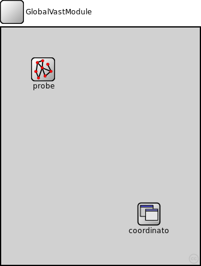
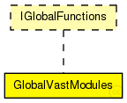

This documentation is released under the Creative Commons license
This documentation is released under the Creative Commons license(no description)
The following diagram shows usage relationships between types. Unresolved types are missing from the diagram. Click here to see the full picture.

The following diagram shows inheritance relationships for this type. Unresolved types are missing from the diagram. Click here to see the full picture.
| Name | Type | Default value | Description |
|---|---|---|---|
| connectivityProbeIntervall | double |
interval after which to check connectivity |
|
| visualizeNetworkIntervall | double | ||
| plotConnections | bool | ||
| plotMissing | bool | ||
| seed | double |
seed for scenery generation |
| Name | Type | Default value | Description |
|---|---|---|---|
| coordinator.Hotspots | string |
For hotspotRoaming, definition of the hotspots |
|
| coordinator.HotspotStayTime | double |
For hotspotRoaming, how long to stay in a hotspot |
module GlobalVastModules like IGlobalFunctions { parameters: double connectivityProbeIntervall @unit(s); // interval after which to check connectivity double visualizeNetworkIntervall @unit(s); bool plotConnections; bool plotMissing; double seed; // seed for scenery generation submodules: coordinator: GlobalCoordinator { parameters: seed = seed; @display("i=block/app"); } probe: ConnectivityProbe { parameters: connectivityProbeIntervall = connectivityProbeIntervall; visualizeNetworkIntervall = visualizeNetworkIntervall; plotConnections = plotConnections; plotMissing = plotMissing; @display("i=block/network2"); } }
This documentation is released under the Creative Commons license